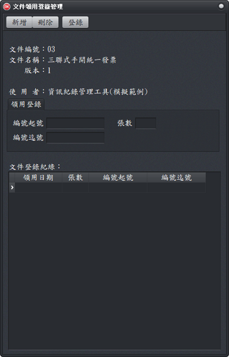

文件領用登錄管理
文件編號
- 有編號文件：支票類及發票類的表格有編號，只要事先登錄並設定好存檔內容，即可供日後查詢或產生報表。
- 無編號文件：無論文件領用是否會有登錄，在列印或存檔後均會保留記錄，以簡化輸入並便於理，相關分析報表功能會逐漸強化
文件領用登錄流程說明
- 將領取取的表格(如支票號碼)進行登錄，在執行文件編輯或列印時，列印紀錄就會依文件編號進行存檔,可供日後查詢分析。
- 領用登錄
- 編號起號：輸入文件第編號，若一次一本，就輸入第1個號碼。
- 張數：如果號碼是連續性的，請直接輸入張數即可。
- 編號迄號：系統會依照編號起號及張數自動算出編號迄號。
- 輸入完成後,已登錄的文件編號就會出現在領用紀錄，文件屬性預設為「空白」。

文件領用登錄管理視窗